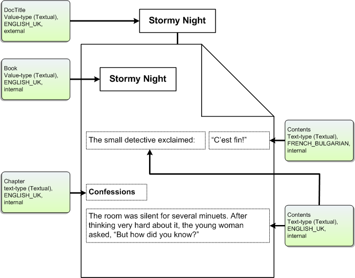

Properties are extracted from items using registered property handlers, or using filters registered for specific file types. A filter handler (an implementation of the IFilter interface) can interpret the contents of a file type in any number of ways.
This topic is organized as follows:
Best practices for property filtering are listed in the following table.
| Method | Description |
|---|---|
| IFilter::Init | Returns the IFILTER_FLAGS enumeration. If the IFILTER_FLAGS_OLE_PROPERTIES member of this enumeration is set to one, then Windows Search uses the IPropertySetStorage and IPropertyStorage interfaces interfaces to enumerate and access external value-type properties. |
| IFilter::GetChunk | Returns information from a document in "chunks" with chunk type (text or value), name, and locale. A chunk contains one document property. |
| IFilter::GetText | Gets a text-type property from a chunk. |
| IFilter::GetValue | Gets a value-type property from a chunk. |
The following illustration shows an example document. The external value-type property DocTitle (obtained using methods of the IPropertySetStorage and IPropertyStorage interfaces) and the internal value-type property Book (obtained as a result of a custom IFilter implementation) describe the document as a whole. The text-type properties Contents and Chapter describe the content of the document. When processing this document, the filter handler (an implementation of the IFilter interface) identifies and extracts these properties.

There are two potential limitations to property size:
Currently, Windows Search does not use the defined property size when calculating the amount of data it accepts from an item. Instead, the limit Windows Search uses is the product of the size of the file and the MaxGrowFactor (file size N * MaxGrowFactor) read from the registry. The default MaxGrowFactor is four.
HKEY_LOCAL_MACHINE
   SOFTWARE
      Microsoft
         Gathering Manager
            MaxGrowFactor
Consequently, if your file type tends to be small in total size but have larger properties, Windows Search may not accept all the property data you want to emit. However, you can increase the MaxGrowFactor to suit your needs.
About Filter Handlers in Windows Search
Best Practices for Creating Filter Handlers in Windows Search
Filter Handlers that Ship with Windows